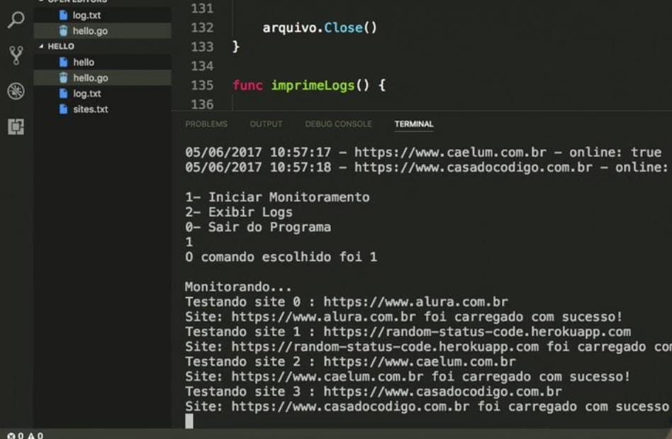

Meu Portfólio
Aqui estão alguns dos meus trabalhos:
ScreenMatch
Screen Match é uma aplicação desenvolvida em Spring Boot que utiliza a API do OMDB. Com este programa, é possível buscar
filmes e séries, obtendo informações detalhadas como avaliação, elenco e data de lançamento. Além disso, é possível realizar buscas por
atores que participaram de filmes e séries, salvando todos os dados em um banco de dados local utilizando o PostgreSQL.
Entre as funcionalidades, destacam-se:
- Comparação das melhores séries salvas no banco de dados.
- Busca de episódios de séries com informações detalhadas, como título, avaliação, entre outros.
GoStatus
GoStatus é uma aplicação em Golang que verifica se um site está online ao checar se o status HTTP é 200. Ela verifica múltiplos sites e gera um log com os resultados.
Jogo da forca
O Jogo da Forca é um programa desenvolvido em C++ que utiliza um banco de palavras armazenado em um arquivo separado. O programa escolhe aleatoriamente uma palavra para você adivinhar. Após três erros, você perde o jogo. Além disso, você pode adicionar novas palavras ao banco de dados no arquivo palavras.txt.